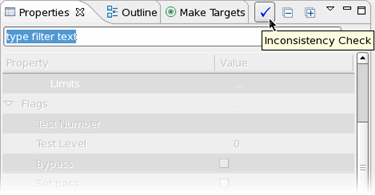
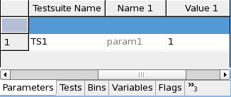

addParameter
This API is used within the initialize() function of a test method class to define test method parameters.
Test method parameter and limit inconsistency check
|
 |
Click the Inconsistency Check button, check the changes of parameters and click OK. For more information, refer to Test method parameter and limit inconsistency check in Testflow Properties view. |
Syntax
TestMethodParameterProxy addParameter("parameterIdentifier","parameterType", &pValueObject,
const TmParameterMode mode = TM_PARAMETER_INPUT)
.function1().function2()...;
This API is defined in the header file /opt/hp93000/soc/testmethod/include/testmethod.hpp.
- Parameters
I/O Parameter Description I parameterIdentifier The string defines the test method parameter name. I parameterType The parameter type defined as string. It can be- int,
- double,
- string,
- PinString,
- SpecVariable,
- SpecValue,
- ContextPins or
- OptionList.
PinString is used for pins, pin lists or pin groups.
SpecVariable is used for spec variables defined in the timing or level files.
SpecValue has the format "value[unit]".
ContextPins is used to define the parameter CCF_FocusedPins in the concurrent test framework.
OptionList provides the possibility to select multiple options as the value of a parameter in this type.
FileString is used to enter file names as the value of a test method parameter.
I pValueObject A pointer to the user defined member variable of the test method class. The type of the variable must be the same as defined by parameter Type. I
mode
The optional parameter mode. It can be- TM_PARAMETER_INPUT or
- TM_PARAMETER_OUTPUT.
function1() and function2() Optional call of TestMethodParameterProxy member functions. - Return value
- A reference to a TestMethodParameterProxy object is returned. You can therefore append the member functions of TestMethodParameterProxy to the call of this API: See function1() and function2() in the syntax description and table above.
Examples
Example 1: Define a parameter
protected:
double mVoltage;
virtual void initialize()
{
addParameter("param1","double",&mVoltage,testmethod::TM_PARAMETER_INPUT)
.setDefault("1.0")
.setOptions("0.0:1.0")
.setComment("voltage to charge");
}
This example adds an input parameter param1 to the test method. It is type of "double" and the variable used in the test method to represent the parameter is mVoltage. The default value of param1 is set to 1.0. The options of param1 include 0.0 and 1.0. The comment of the parameter is "voltage to charge".
When the test method in which this parameter is defined is associated with a testsuite TS1, the Parameters page of this testsuite could look as follows:

Example 2: Control the visibility of parameters with another parameter
The following example shows how to control the visibility of some parameters through setting different values to another parameter. The visibility of param2 and param3 is controlled by the value of param1. When param1 is set to Show, param2 and param3 are shown. Otherwise, they are hidden in the Properties view and Flow Data editor.
protected:
string mparam1;
int mparam2;
int mparam3;
virtual void initialize()
{
addParameter("param1", "string", &mparam1).setOptions("Show:Hide").setDefault("Show");
addParameter("param2", "int", &mparam2).setDefault("1");
addParameter("param3", "int", &mparam3).setDefault("2");
}
virtual void run()
{
...
return;
}
virtual void postParameterChange(const string& parameterIdentifier)
{
bool visible = (mparam1 == "Show");
getParameter("param2").setVisible(visible);
getParameter("param3").setVisible(visible);
return;
}
Functional changes
- Introduced before SmarTest 6.3.2
- SmarTest 6.5.0: Supports new parameter types: SpecVariable, PinString
- SmarTest 6.5.2: Supports the parameter type SpecValue
- SmarTest 7.2.0: Supports the parameter type ContextPins and OptionList
- SmarTest 7.2.1: Supports the parameter type FileString